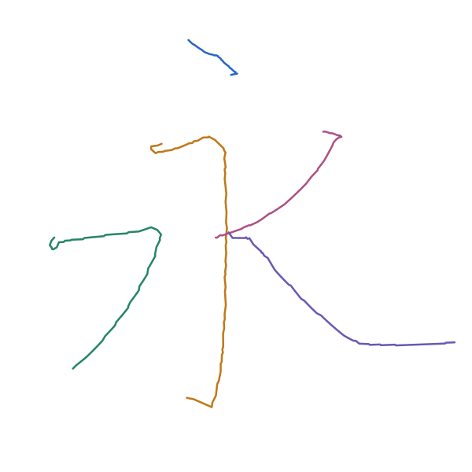

字形参考提供位置、笔顺和布局；下图5笔路径由所选笔画模板适配生成。当前结果是教学写法几何候选。
打开整字 XY，查看或局部修正 → 下载合成配方 下载整字 XY

| 笔顺／写法 | 来源与模板版本 |
|---|---|
| 1. 右点 | dian / right_dotf60bcdfe10a35c8776735119f04a650594287bd6707b52490e9d921f11fedaa3 |
| 2. 横折钩 | hengzhegou / short_heng_long_shu7fdc572b0620e9c55392f856de6f53439c91ad228cf9d5129f6fcc0df12cad9d |
| 3. 横撇 | hengpie / short_heng_curved_pie9335532bf5f9ee6f8b0bc59b1290bad234cda3146a02a25e852cc8938962a08b |
| 4. 斜撇 | pie / slant2835b97b6b7766e0fb236ba98a2ecd11f7c8b363782bf74d285916cdc3730ad3 |
| 5. 斜捺 | na / slant0c5cda3ff065c92f7a3b02a35fd08797f5fd928168ac6df1f9d941c06a2bd252 |
配方可调整每笔的主体长度、分段长度、宽度尺度、旋转和位移；尺寸调整后重新运行 compose 生成新版本。合成包保存布局与模板快照，可以离线重建。
布局原图仅用于定位和对照。模板尚未对应真实时间、Z 高度或磁响应。